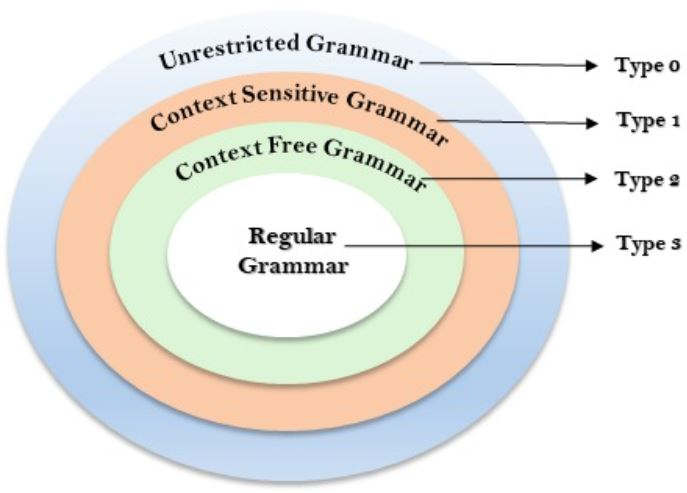
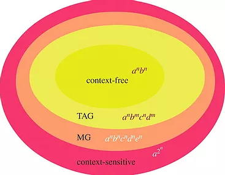

Sejarah dan Pengertian Hierarki Chomsky
Bahasa apa pun adalah media komunikasi terstruktur baik itu bahasa lisan atau tulisan, bahasa isyarat
atau kode, atau bahasa pemrograman formal. Bahasa dicirikan oleh dua elemen dasar - sintaks (aturan
tata bahasa) dan semantik (makna). Dalam beberapa bahasa, artinya mungkin berbeda-beda bergantung pada
faktor ketiga yang disebut konteks penggunaan. Bergantung pada batasan dan kompleksitas yang ada dalam
tata bahasa, bahasa mendapat tempat dalam hierarki bahasa formal.
Noam Chomsky, ahli bahasa Amerika
sekaligus ilmuwan kognitif ternama, mendefinisikan hierarki ini pada tahun 1956 dan karenanya disebut
Chomsky Hierarchy. Dalam teori bahasa formal, ilmu komputer, dan linguistik, hierarki Chomsky (terkadang
disebut sebagai hierarki Chomsky-Schützenberger) adalah hierarki penahanan kelas-kelas tata bahasa formal.
Hierarki Chomsky merupakan tata Bahasa (grammar) yang bisa didefinisikan secara formal sebagai sebuah kumpulan
dari himpunan-himpunan variabel, simbol-simbol terminal, simbol awal, yang dibatasi oleh aturan-aturan produksi.
Istilah dalam Hierarki Chomsky
- Simbol - Huruf, angka, karakter tunggal. Contoh - A, b, 3
- String - Urutan simbol hingga. Contoh - Abcd, x12
- Aturan Produksi - Kumpulan aturan untuk setiap tata bahasa yang menjelaskan cara membentuk string dari bahasa yang valid secara sintaksis.
- Terminal - Unit tata bahasa terkecil yang muncul dalam aturan produksi, tidak dapat dirinci lebih lanjut.
- Non-Terminal - Simbol yang dapat diganti dengan non-terminal atau terminal lain dengan penerapan aturan produksi yang berurutan.
- Grammar - Aturan untuk membentuk kalimat yang terstruktur dengan baik dan kata-kata yang membentuk kalimat tersebut dalam suatu bahasa. A 4-tupel G = (V, T, P, S) sedemikian rupa sehingga V = Himpunan tak-kosong terbatas dari simbol-simbol non-terminal, T = Himpunan hingga simbol terminal, P = Himpunan aturan produksi tak-kosong hingga, S = Simbol mulai
- Bahasa - Kumpulan string yang sesuai dengan tata bahasa. Bahasa pemrograman memiliki string terbatas, sebagian besar bahasa alami tampaknya tidak terbatas. Contoh - Spanyol, Python, kode Heksadesimal.
- Automaton - Versi tata bahasa yang dapat diprogram dan diatur oleh aturan produksi yang telah ditentukan sebelumnya. Ini telah menetapkan persyaratan komputasi memori dan pemrosesan dengan jelas. Contoh - Otomat biasa untuk ekspresi reguler.
Kategori dalam Hierarki Chomsky
Hierarki Chomsky mewakili kelas bahasa yang diterima oleh mesin yang berbeda. Kategori bahasa dalam Hierarki Chomsky dapat dibedakan menjadi beberapa macam, yaitu sebagai berikut:
Type 0: dikenal sebagai Unrestricted Grammar
Type 0 Grammar dikenal sebagai Unrestricted Grammar. Tidak ada batasan pada aturan tata bahasa untuk
jenis bahasa ini. Bahasa-bahasa ini dapat dimodelkan secara efisien oleh mesin Turing.
Contoh:
bAa → aa
S → s
Type 1: dikenal sebagai Context Sensitive Grammar
Type 1 Grammar dikenal sebagai Context Sensitive Grammar. Context Sensitive Grammar digunakan untuk mewakili Context Sensitive Language. Context Sensitive Grammar mengikuti aturan berikut:
- Context Sensitive Grammar mungkin memiliki lebih dari satu simbol di sisi kiri aturan produksinya.
- Jumlah simbol di sisi kiri tidak boleh melebihi jumlah simbol di sisi kanan.
- Aturan dalam bentuk A → ε tidak diperbolehkan kecuali A adalah simbol awal. Itu tidak terjadi di sisi kanan aturan mana pun
- Type 1 grammar harus Tipe 0. Dalam type 1, Produksi dalam bentuk V → T
Contoh:
S → AT
T → xy
A → a
Type 2: dikenal sebagai Context Free Grammar
Type 2 Grammar dikenal sebagai Context Free Grammar. Context Free Languages adalah bahasa yang dapat
direpresentasikan oleh Context Free Grammars (CFG). Tipe 2 harus tipe 1. Aturan produksi adalah dalam
bentuk A → α, dimana A adalah satu non-terminal dan merupakan kombinasi dari terminal dan non-terminal.
Contoh:
A → aBb
A → b
B → a
Type 3: dikenal sebagai Regular Grammar
Type 3 Grammar dikenal sebagai Regular Grammar. Bahasa reguler adalah bahasa yang dapat
dideskripsikan menggunakan ekspresi reguler. Bahasa-bahasa ini dapat dimodelkan oleh NFA atau DFA.
Type 3 adalah bentuk tata bahasa yang paling terbatas. Tata bahasa Type 3 harus Type 2 dan Type 1. Dan adapun Type 3
harus dalam bentuk V → T*V / T*.
Contoh:
A → xy
Ektensi Penting untuk Hierarki Chomsky
Ada dua perluasan pada hierarki Chomsky tradisional yang telah terbukti berguna dalam linguistik dan ilmu kognitif:
- Mildly context-sensitive languages
CFG tidak memadai (lemah atau kuat) untuk mencirikan beberapa aspek struktur bahasa. Untuk mendapatkan kekuatan ekstra di luar CFG, formalisme gramatikal yang disebut Tree Adjoining Grammars (TAG) diusulkan sebagai karakterisasi perkiraan Mildly Context-Sensitive Grammars. Ini adalah sistem penghasil pohon yang memfaktorkan rekursi dan domain dependensi dengan cara baru yang mengarah ke 'lokalisasi' dependensi, perilaku jarak jauhnya setelah pengoperasian komposisi, yang disebut 'adjoining'. Klasifikasi lain yang disebut Minimalist Grammars (MG) menggambarkan kelas bahasa formal yang lebih besar. - Bahasa sub-reguler
Bahasa sub-reguler adalah sekumpulan string yang dapat dijelaskan tanpa menggunakan kekuatan penuh automata keadaan terbatas. Banyak aspek bahasa manusia yang secara nyata sub-reguler, seperti beberapa ketergantungan 'strictly local'. Contoh - mengidentifikasi pola sub-string berulang dalam kata-kata adalah salah satu aplikasi yang umum.
Jenis Automaton setiap Level Hierarki Chomsky
Adapun jenis automaton yang mampu mengenali tata bahasa di setiap level yaitu sebagai berikut:- Type-3: Finite-State Automata
Untuk menghitung konstruksi untuk bahasa biasa, pertimbangan terpenting adalah tidak adanya kebutuhan memori. Pikirkan mesin penjual otomatis untuk tiket platform atau algoritme lift. Otomaton mengetahui keadaan saat ini dan keadaan selanjutnya yang diizinkan, tetapi tidak 'mengingat' langkah-langkah sebelumnya. - Type-2: Push-Down Automata
Untuk mencocokkan dependensi bersarang, robot ini membutuhkan tumpukan memori satu ujung. Misalnya, untuk mencocokkan jumlah frasa 'jika' dan 'lain', robot perlu 'mengingat' yang terakhir terjadi 'jika'. Hanya dengan begitu ia dapat menemukan 'lain' yang sesuai. - Type-1: Linear-Bounded Automata
Adalah bentuk mesin Turing terbatas yang bukannya tidak terbatas, melainkan dibatasi oleh beberapa fungsi linier yang dapat dihitung. Keuntungan dari robot ini adalah bahwa kebutuhan memorinya (batas atas RAM) dapat diprediksi bahkan jika eksekusinya bersifat rekursif di beberapa bagian. - Tipe-0: Mesin Turing
Fungsi yang tidak dapat dihitung ada dalam Matematika dan Ilmu Komputer. Namun, mesin Turing memungkinkan merepresentasikan fungsi seperti itu sebagai urutan langkah-langkah terpisah. Kontrol itu terbatas meskipun data mungkin tampak tidak terbatas.
Referensi
DevopediaTM: Chomsky Hierarchy
Goddard: The Chomsky Hierarchy
Inimega.com: Tata Bahasa, Hirarki Chomsky, dan Teori Himpunan